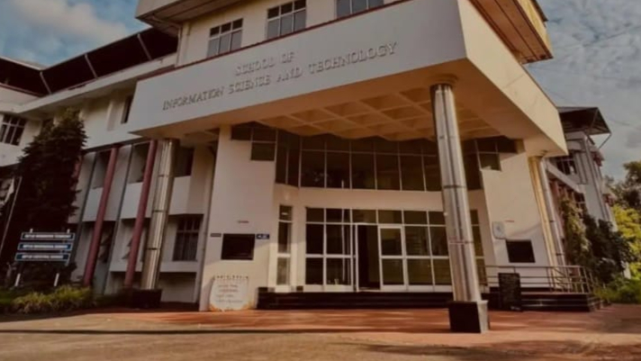
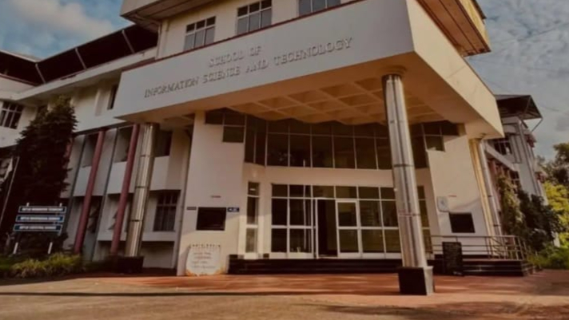

IT Department
The Department of Information Technology, established in 2000, integrates quality education with advanced teaching, learning, and research facilities. It offers postgraduate programs, including MCA, M.Sc. Computer Science, M.Phil, and Ph.D. in Computational Science, with research in areas like Speech and Signal Processing, Medical and Astronomical Image Processing, Data Mining, NLP, Algorithm Design, Big Data Algorithms, Active Noise Cancellation, and AI. The Department pioneered a 2-year Master of Computer Science program on the Open Source platform in 2000 and introduced a Post Graduate Diploma in Data Science and Analytics in 2020. With a focus on innovation, it has produced professionals excelling in the IT industry in India and abroad.